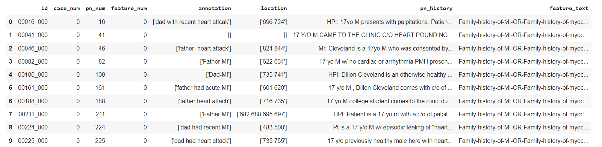
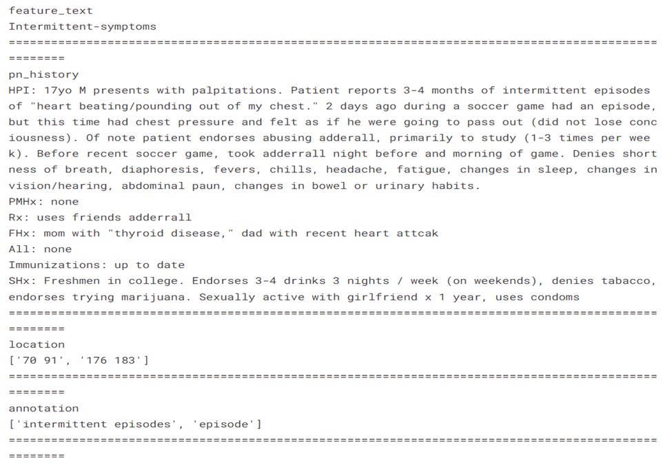

A patient's notes are the sole way for a doctor to communicate with another doctor or with a patient. It determines whether a patient's diagnosis is correct, and it takes feedback on the notes from other doctors with extensive experience in writing patient notes, including patient problems, physical examinations, test reports, complaints, possible diagnosis, and follow-up treatment. However, having physicians score patient note exams requires significant time, along with human and financial resources. Approaches using natural language processing have been created to address this problem, but patient notes can still be challenging to score computationally because features may be expressed in many ways. This takes a long time to learn and access, but it can be enhanced with the help of Natural Language Processing and Deep Learning Algorithms.
The Dataset is from a Kaggle competition NBME – Score Clinical Patient Notes. The dataset contains of 3 training csv and 1 testing dataset csv.
Patient_notes.csv: A collection of about 40,000 Patient Note history portions. Only a subset of these have features annotated. You may wish to apply unsupervised learning techniques on the notes without annotations. The patient notes in the test set are not included in the public version of this file.
pn_num - A unique identifier for each patient note.
case_num - A unique identifier for the clinical case a patient note represents.
pn_history - The text of the encounter as recorded by the test taker.
features.csv: The rubric of features (or key concepts) for each clinical case.
feature_num - A unique identifier for each feature.
case_num - A unique identifier for each case.
feature_text - A description of the feature.
train.csv: Feature annotations for 1000 of the patient notes, 100 for each of ten cases.
id - Unique identifier for each patient note / feature pair.
pn_num - The patient note annotated in this row.
feature_num - The feature annotated in this row.
case_num - The case to which this patient note belongs.
annotation - The text(s) within a patient note indicating a feature. A feature may be indicated multiple times within a single note.
location - Character spans indicating the location of each annotation within the note. Multiple spans may be needed to represent an annotation, in which case the spans are delimited by a semicolon.
As the given 3 tables are of relational data, we can combine them into a flat data as shown below:

Designed a word cloud of the words used in the feature text to understand about the most frequently used words.
After Data Preprocessing you can clearly see the feature text, patient_history, annotations and the location of the annotations:
The Bidirectional Encoder Representations from Transformers is an important milestone in the NLP world. It inspired many models based on this architecture, and one of the most important models is BERT. BERT stands for Bidirectional Encoder Representations from Transformers. BERT is a pre-trained language model using the encoder part of Transformer architecture. The input of BERT is a representation of each token. Each token consists of three parts: token embedding, segment embedding and position embedding. Token embedding is the word vector of each word or special character. The segment embedding is to identify different sentences. The position embedding is the location of each word. The final input will be the sum of these three embeddings. The output of the BERT model has two parts. The first is class token which means the output of the [CLS] token. This class token is to predict classification problems like sentiment classification. The second part is the output of other word tokens. These tokens are used in some token-level tasks like question answering and sequence labeling.
As our objective is to fine-tune our model to recognize entities, we use Named-entity Recognition (NER) which is "the task of tagging entities in text with their corresponding type."
While most of the hyperparameters are already defined in pretrained model config, We used TRAIN_SPLIT = 0.8, BATCH_SIZE = 12, EPOCHS = 20, SEQUENCE_LENGTH = 512
SEED = 999 and trained the model with Categorical crossentropy as the loss function and Adam W as the optimizer with lr=1e-5.
After training the model on the training and validation dataset, the following graph is obtained w.r.t training and validation loss: